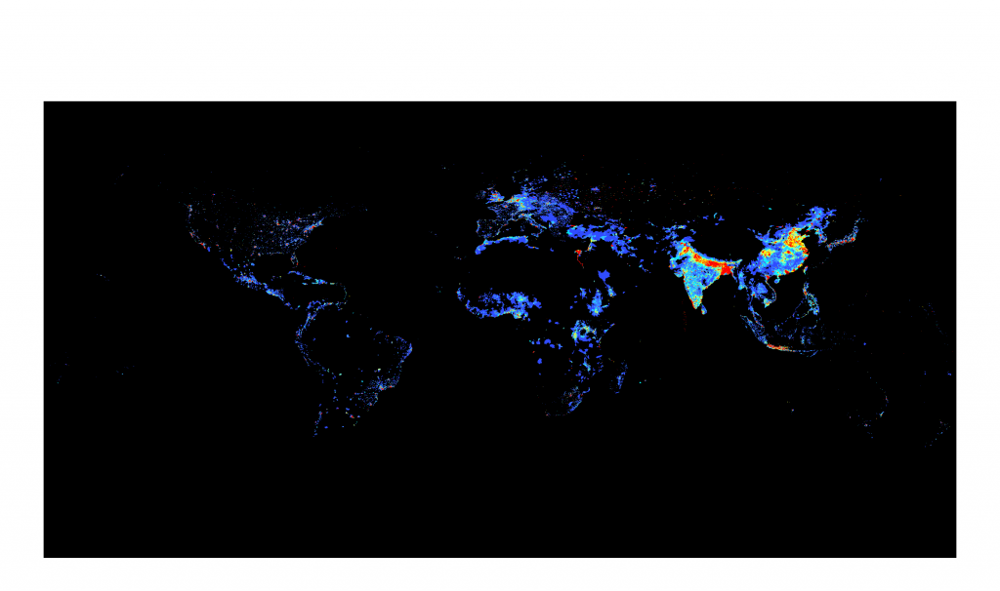
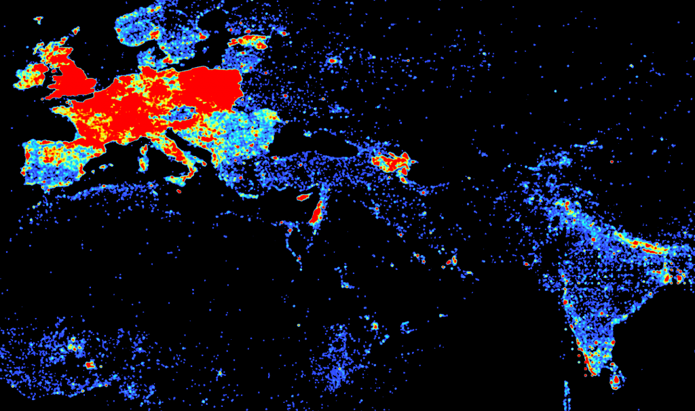
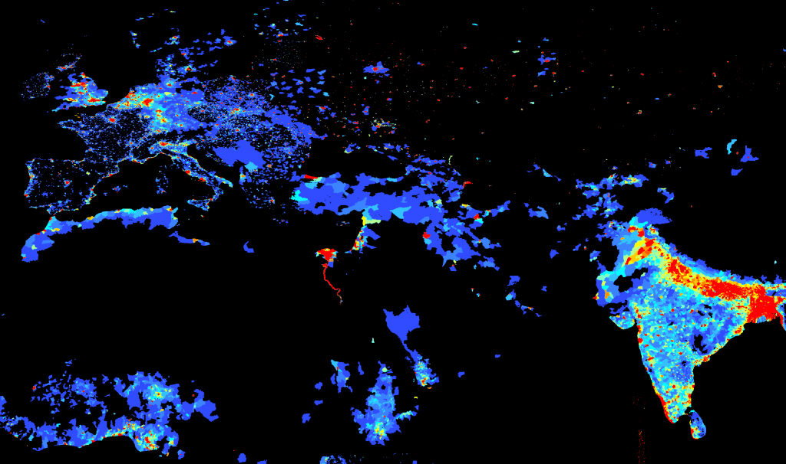
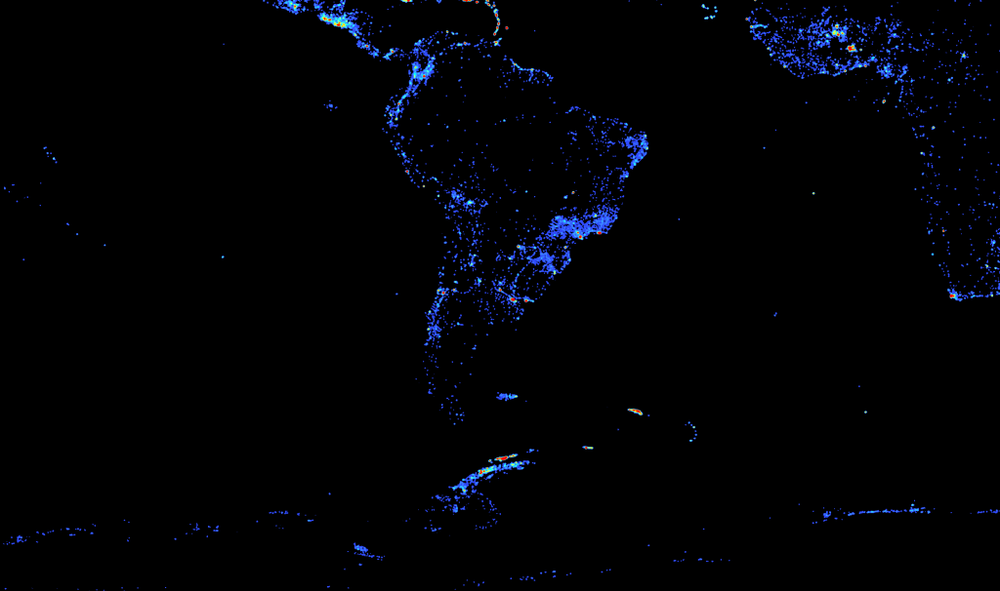
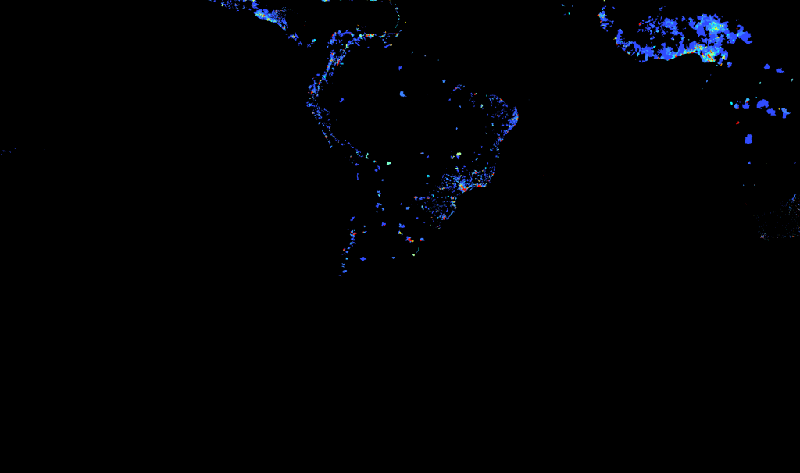
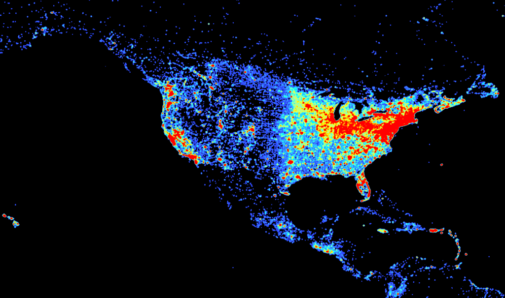
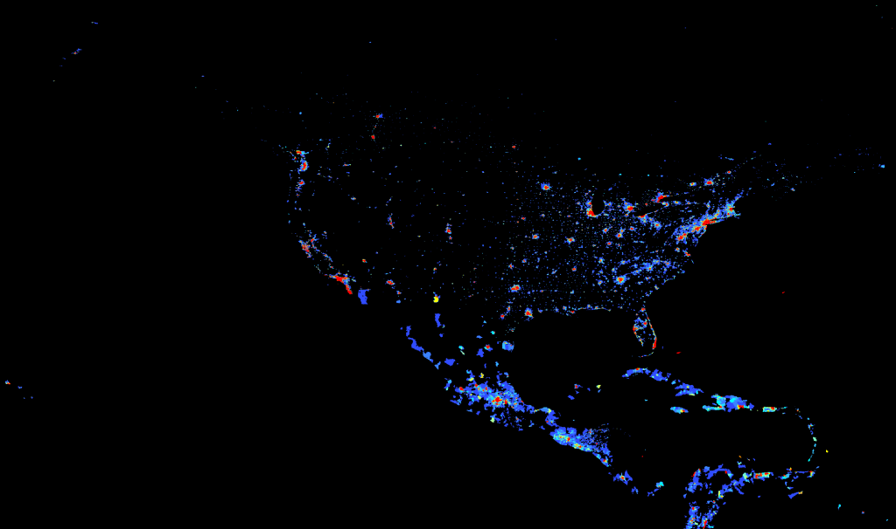
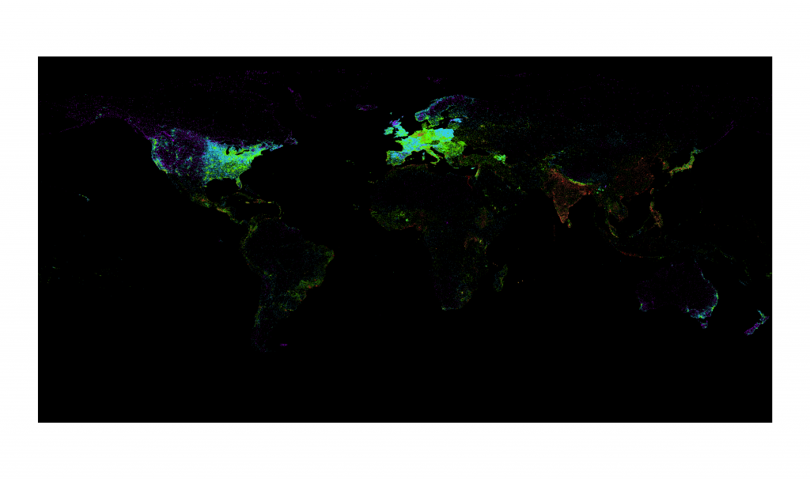
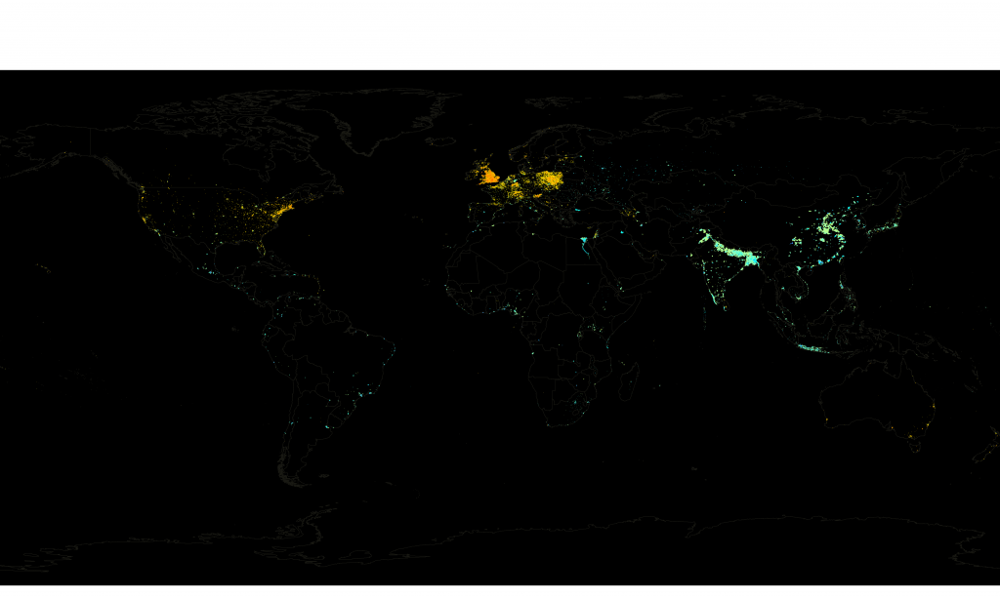
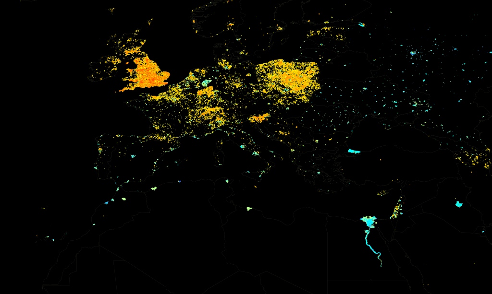

One of the responses I’ve heard to the Wikipedia Map in the last post is that it tracks to population density, so I grabbed a population density map from SEDAC and created a few comparative maps at similar scales to see.
Also, in the spirit of GIS Day, the dataset containing all 492,000 points with article labels and links in Shapefile and tab-delimited text format are available here:
DBpedia-derived Geolocated Articles in Shapefile Format (20MB zip file – 280MB unzipped)
DBpedia-derived Geolocated Articles in Tab-Delimited Format (10MB zip file – 44MB unzipped)

DBpedia Article Density Worldwide


Population Density Worldwide


DBpedia Article Density Europe, South Asia and North Africa


Population Density Europe, South Asia and North Africa


DBpedia Article Density South America, Africa, Antarctica


Population Density South America, Africa, Antarctica


DBpedia Article Density United States


Population Density United States
You’ll notice that the Wikipedia article density above and in the previous post is created to give a more general density suitable for a world map. I spent some time trying to match the Wikipedia article density map scale to the SEDAC scale and then divided the one by the other to give some idea of the number of people per article below. It’s just a draft, and there’s likely some spatial due diligence that I’ve left out, but you can’t let a GIS Day go by without doing some raster algebra.


Purple - Less than 10 people per Wikipedia article. Blue 10 - 100. Green 100 - 1000. Brown 1000 - 10,000. Red 10,000 or more.
Another way to look at it is to normalize the population density as a ranking and the Wikipedia article density as a ranking, from 1 to 10, geometrically using raster reclassification, and subtracting the population ranking from the Wikipedia ranking. This does, in my mind, a better job of showing areas that are underrepresented on Wikipedia if we think it should somehow correlate to population.


Yellow to red areas have a higher Wikipedia article density ranking than they do a population density ranking while, conversely, areas in turqouise to dark blue show an increasingly higher population density ranking than they do Wikipedia article density ranking. Black areas either have no data or are within 1 ranking of each other and, it could be argued, show the "correct" number of Wikipedia articles based on population.


A close-up showing the ratio of population density ranking to Wikipedia article density ranking in Europe, the Middle East and North Africa.
I’ve read quite a few responses to these maps and another project by the Oxford Internet Institute that just finished mapping Wikipedia articles by language and I’m most surprised by the idea that somehow Wikipedia article density should closely track to modern population density. It seems reductive, somehow, and anthropocentric. But, perhaps that’s what an encyclopedia is?